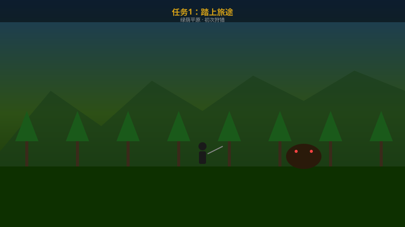
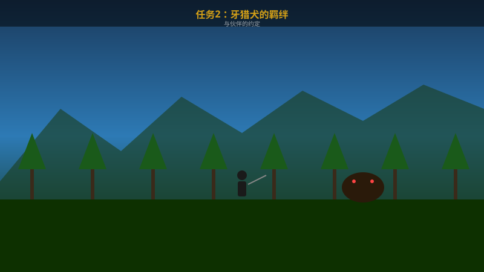
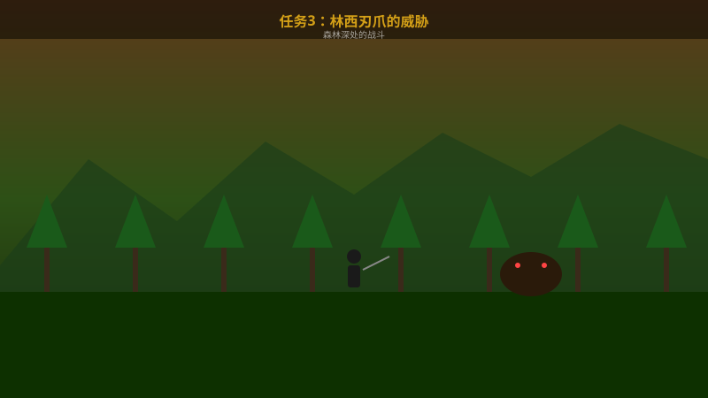
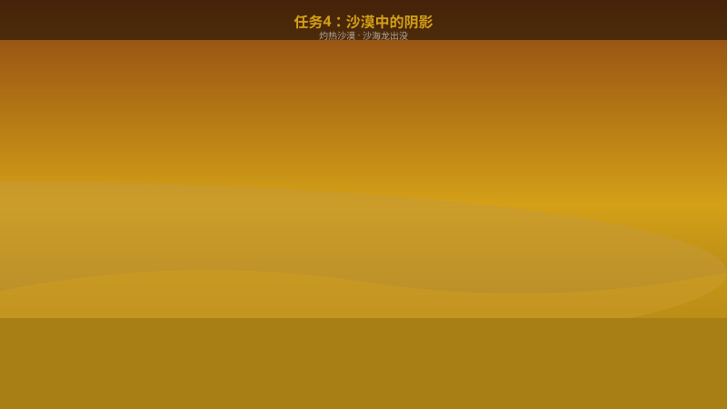
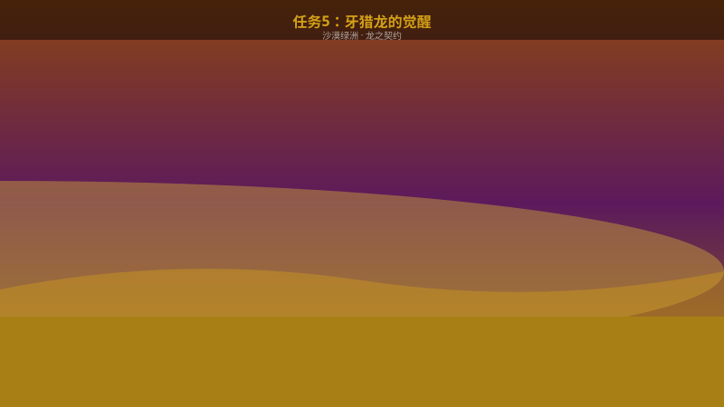
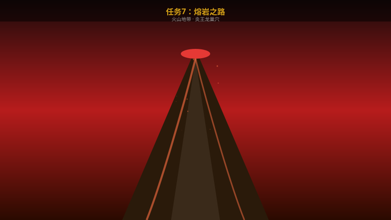
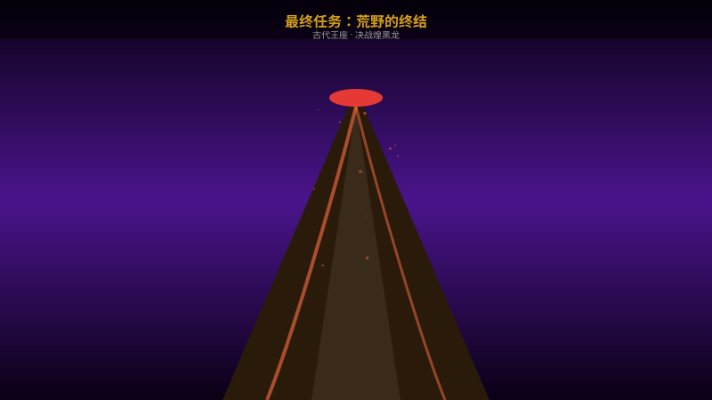

★
任务1：踏上旅途
主线
📋 流程步骤
- 出发准备
在营地与艾莉交谈接受任务。检查装备，携带足够的治疗药和食物。推荐武器：大剑。
- 前往调查点
沿标记路线前进，途中教授基本移动、攻击和防御操作。
- 首次遭遇
遇到第一只目标怪物——林西刃爪。这是教学战，怪物攻击力较低。
- 完成任务
击败怪物后返回营地，获得首笔报酬和初始装备。解锁营地系统。
💡 攻略提示
- 不要急于进攻，先观察怪物的攻击前摇动作
- 闪避时按住方向键可以改变闪避方向
- 第一次击杀后会获得斩击斧的制作材料
从零开始，逐步成为最强猎人的完整通关指南
新手引导阶段，学习基础操作

在营地与艾莉交谈接受任务。检查装备，携带足够的治疗药和食物。推荐武器：大剑。
沿标记路线前进，途中教授基本移动、攻击和防御操作。
遇到第一只目标怪物——林西刃爪。这是教学战，怪物攻击力较低。
击败怪物后返回营地，获得首笔报酬和初始装备。解锁营地系统。

在营地附近找到受伤的牙猎犬，使用治疗药为其疗伤。
牙猎犬会教你追踪技能。按住互动键让它嗅探附近的怪物踪迹。
与牙猎犬一起讨伐草食龙。牙猎犬会自动攻击怪物。

在营地查看任务信息，了解林西刃爪的活动范围。
在靠近怪物栖息地的位置设置前进营地。
林西刃爪是敏捷型怪物，擅长快速连击和突袭。
林西刃爪的前肢和头部是弱点部位。
进入沙漠区域，解锁牙猎龙骑乘系统

进入沙漠后注意温度计量表，需饮用清凉饮料或使用降温炼金。
在沙丘间寻找怪物踪迹，沙地下有沙海龙出没的信号。
沙海龙会潜入沙中突袭，注意地面震动波纹，使用音爆弹逼它现身。

在沙漠深处的绿洲发现一只被困的幼年牙猎龙。
击败守护绿洲的熔岩龙幼体，解除牙猎龙的封印。
解锁牙猎龙骑乘系统，可以空中飞行、俯冲攻击。
探索海域，揭开古代文明的秘密
乘坐船只到达海边据点，从这里开始可以进入海域探索。
领取潜水装备，可以长时间在水下活动。注意氧气量。
探索海底古代遗迹，里面有珍贵的炼金素材和古代文献。
在遗迹深处遭遇苍海龙，需要利用地形和水下机动性来战斗。
深入火山地带，挑战最严酷的环境

火山区域有持续高温伤害，必须装备防火防具或服用耐热炼金。
地图中有流动的熔岩河，需要踩着岩石跳跃前进。
任务中途会触发火山爆发事件，需要在限定时间内逃离。
在火山最深处的巢穴中，炎王龙正在沉睡。
面对最终的威胁，所有力量汇聚于此

确保装备满强化，炼金全部带上。推荐装备：最高等级龙属性武器+全抗防具。
最终BOSS煌黑龙在王座中等候。战斗分为两个阶段。
煌黑龙使用龙属性吐息和翅膀攻击。注意躲避龙息的范围攻击。
血量降至50%后，煌黑龙获得雷属性加持，攻击速度和范围大幅增加。
击败煌黑龙后，游戏主线结束。但还有大量后续内容等待探索……